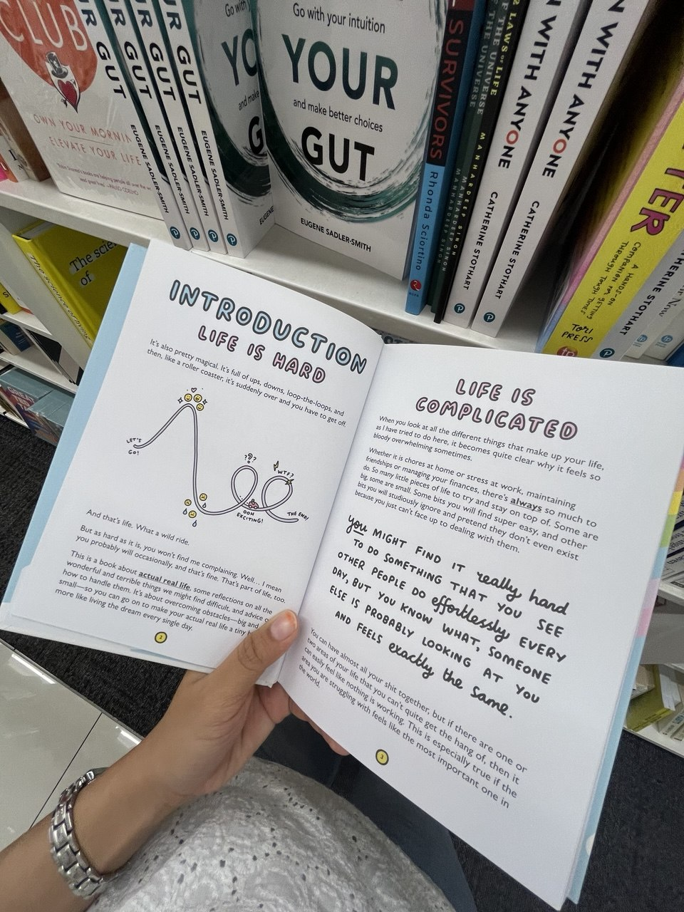
Lecture
Lire me permet de ralentir, découvrir de nouvelles idées et mieux comprendre le monde.
à propos de moi
Originaire de Malaisie et actuellement en formation à l’IUT Nice Côte d’Azur, j’y rassemble les projets et expériences qui marquent mon parcours dans le domaine des réseaux et télécommunications. Ce site présente mes réalisations, mes compétences et les apprentissages que je construis au fil de ma première année en France.
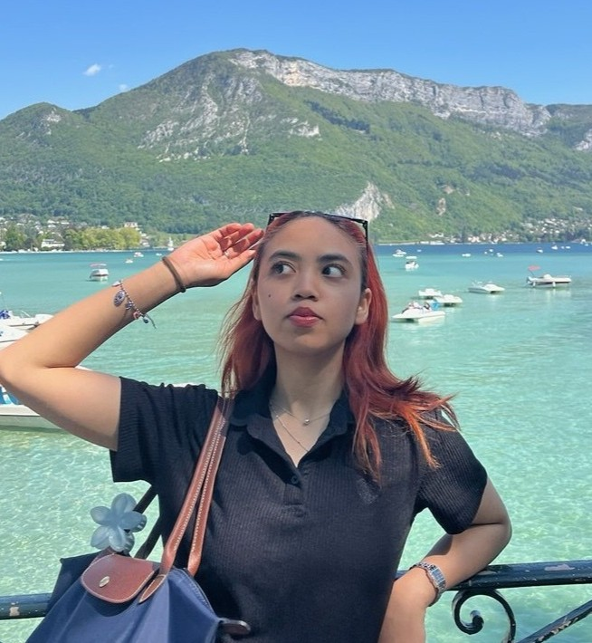
Aisya ♥
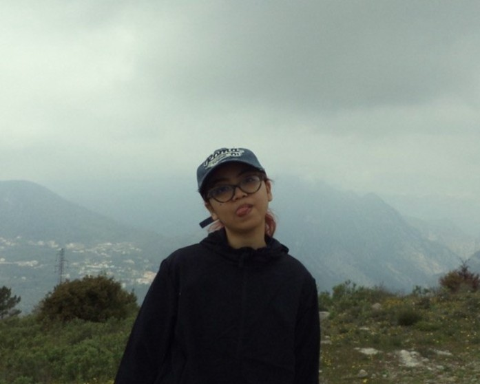
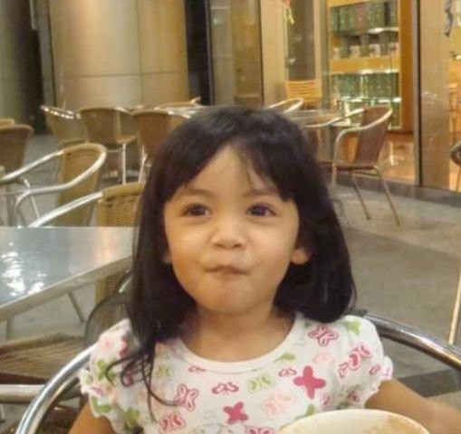
Depuis longtemps, je suis attirée par la manière dont le numérique permet de connecter les personnes, de transmettre des informations et de faciliter le quotidien. C’est cette curiosité qui m’a menée vers les réseaux et les télécommunications, un domaine où je peux apprendre en testant, en observant et en construisant progressivement des solutions. Dans ma façon de travailler, j’aime avancer étape par étape : comprendre le besoin, chercher des pistes, essayer, me tromper parfois, puis améliorer. Les projets réalisés en équipe m’aident aussi à développer ma communication, mon organisation et ma capacité à collaborer.
voir mes projets →Quelques activités qui m’inspirent, m’aident à apprendre autrement et nourrissent ma créativité.

Lire me permet de ralentir, découvrir de nouvelles idées et mieux comprendre le monde.
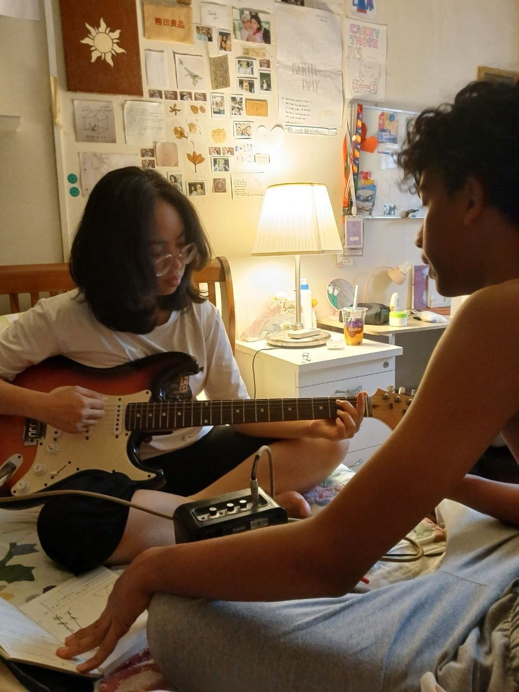
La musique m’accompagne dans mes moments de travail, de concentration et de créativité.
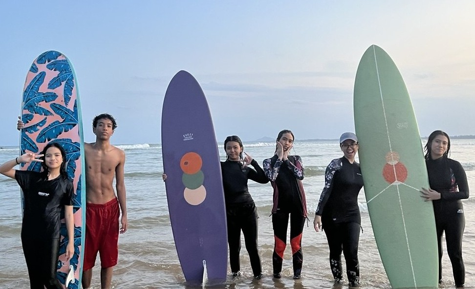
Le surf me rappelle l’importance de l’équilibre, de la patience et de l’adaptation.
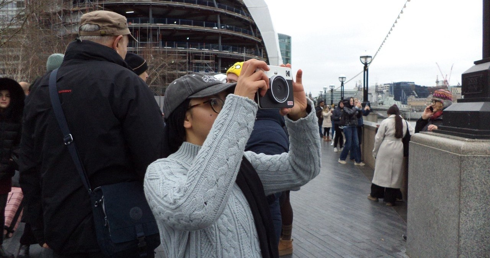
La photographie me permet de capturer des moments et de raconter une ambiance.
En dehors des cours, je participe à des projets associatifs avec MASAF. J’aime organiser des événements, contribuer à des actions solidaires, travailler en équipe et créer du lien avec d’autres étudiants. Ces expériences m’apprennent à communiquer, m’organiser et prendre des initiatives.
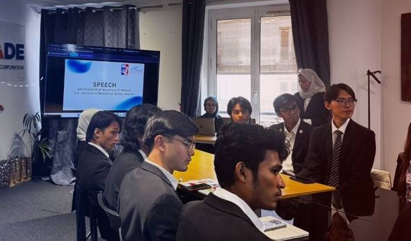
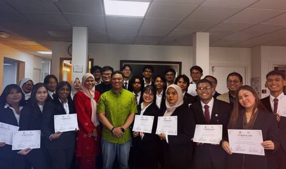
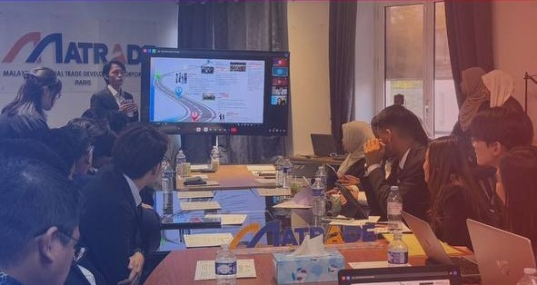
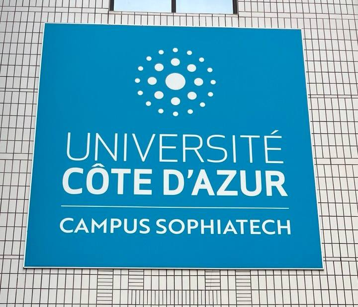
BUT Réseaux & Télécommunications
2025 – présent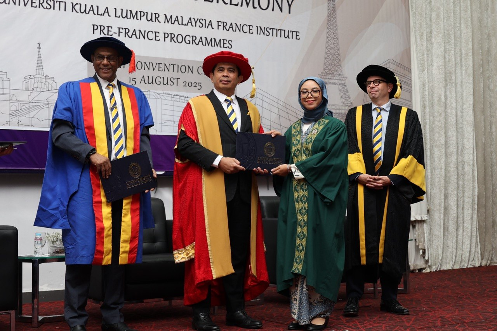
Classe préparatoire
2024 – 2025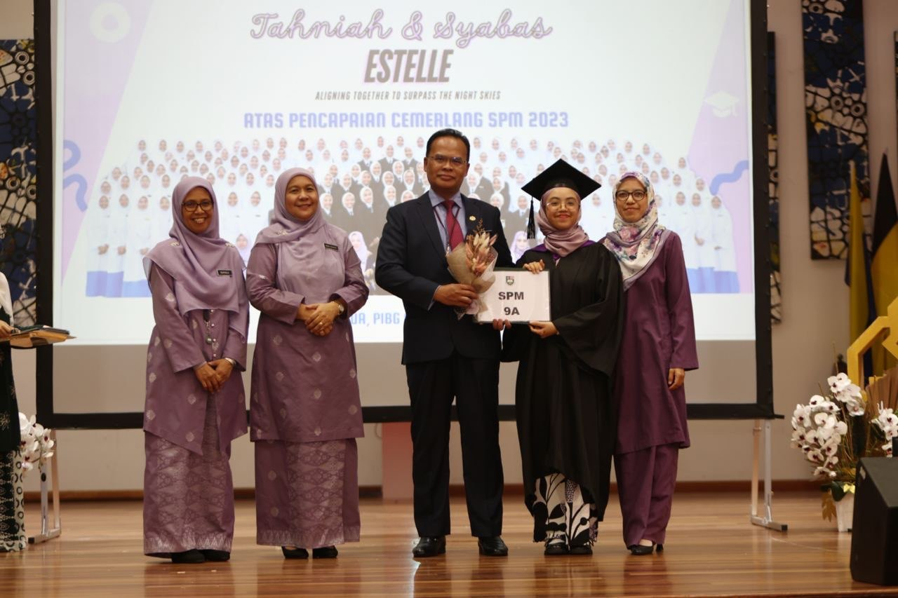
Lycée
2019 – 2024J’y partage mon parcours, mes projets, mes apprentissages et mes centres d’intérêt autour du numérique.
Envie d’en savoir plus ou de collaborer ?
Je suis toujours ouverte aux échanges !